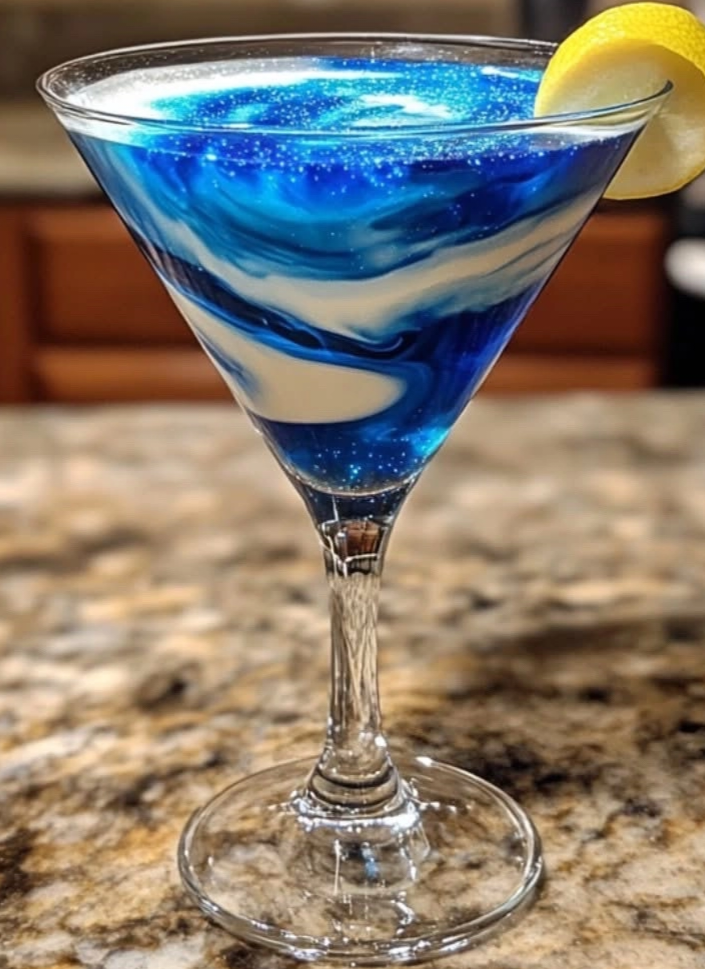

Outer-Galaxy Kitty

Ingredients
- 1 1/2 oz Vodka
- 1 oz Blue Curacao
- 1 oz Cranberry Juice
- 1/2 oz Lime Juice
- 1/2 oz Simple Syrup
- 1/2 oz Coconut Cream(for a creamy swirl effect)
- Edible Glitter(for a shimmering galaxy effect)
- Ice Cubes
- Lemon Twist(for garnish)
Instructions
- Fill a shacker with ice cubes.
- Add vodka,blue caracao, cranberry juice, lime juice, and simple syrup.
- Shake well until chilled.
- Strain the mixture into a martini glass.
- Slowly drizzle coconut cream into the drink to create a mesmerizing swirling effect.
- Sprinkle a pinch of edible glitter for that glowing galaxy look.
- Garnish with a lemon twist for the final touch.
- Enjoy!